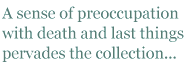

Alison Brackenbury’s eighth collection continues many of the preoccupations that characterise her work — fans will not be disappointed to discover that the strict formal control is as adept as ever, and that many of her favourite subjects such as animals, nature, and the minutiae of life are returned to again. Much of the song in this collection is celebratory; but there is also an underlying darkness which pervades the collection, and one gets the feeling that much of the singing done is of the elegiac or nervous kind.
There is an innate musicality in the verse which is derived from the concern with rhyme of various kinds: full rhyme and assonance predominate.She seems particularly fond of three-line stanzas containing a couplet, with the first lines in consecutive stanzas either unrhymed or rhymed. The verse is tightly wrought into a number of forms — from variations on the ballad , through some forms which resemble the villanelle but aren’t, to an adept handling of octameter lines in Night Shift. Many a lesser poet might have been tempted to split those into quadrameters, but the long breathy line works excellently for Brackenbury in this:
In strange back lanes behind high flats, shuttered for Sunday, workshops still
I walk from town, coffees, small talk. The clouds, enormous, bloom and chase
Above the black, three-cornered shack whose pools of light and oil spill. (p.31)
The rhyme isn’t sustained throughout the poem and I think it benefits from that, feeling more loose and conversational, but the beginning and ending contain full rhyme which musically “ties the poem up”; while the middle part depends on much looser sound echoes of consonance and assonance. At times there are perhaps too many stray adjectives for my liking (such as high flats above) but that seems to be a stylistic feature of the way she writes and most of the adjectives she uses add to the verse, but when the odd “default adjective” creeps in (such as “stony paths” and “mossy woods” later) the writing can occasionally seem overly ornate.
As is appropriate for a collection entitled Singing in the Dark, not all of the poems are entirely comfortable or comforting — I particularly liked the Six Poems for Nick Drake; the imagery is deft and sharp and surprising:
Then stare at the high wasteland of the stars
Which whistles through our bones, as iron hums bars.
(p.34)
That last half line above is particularly good, encapsulating as it does an ambiguity which allows for the iron musically forming itself into “bars” as well as humming bars of music — I really liked that idea. Another reviewer (in the Guardian) has pointed at the line “No, reader, He is dead” in section four: He of this poem sequence as rather melodramatic; I wouldn’t go quite that far but I do think it falls a little flat as an end line (though I take the nod to both Jane Eyre and Heart of Darkness it contains). That said, I think that there are so few lines which fall down in this collection, the fact that we both have alighted on the same example in ninety-six pages of verse must say something for the rest of the book!
A sense of preoccupation with death and last things pervades the collection — the strand runs from the first poem (from which the collection title is taken) and connects several elegiac poems dealing with Nick Drake, Jeff Buckley and suggestion of the drowned youth in Lesbia, later: “The boy died, washed aside, her written out past” (p.62). Set against this, though, are poems which resonate with love of nature and animals and joy at being alive. The imagery in these poems is beautiful, vivid and uplifting:
They slipped into the mossy woods
Missed fire and cries. Now safe, they rock
Down stony paths, until the fox
Noses their dens. Dim cream, nut brown,
Forty rare shells lie tossed around.
(p.80)
I enjoyed this book and was heartened by the generosity of spirit and genuine love of language in it. Perhaps the overall message of the collection may be summed up by the feeling that there is an attempt to show to the reader that no matter how present the darkness is, the song is worth singing; perhaps even that it is crucial that we keep singing in the dark...
Nigel McLoughlin is Principal Lecturer in Creative Writing at the University of Gloucestershire. He holds MA and PhD degrees in Creative Writing from Lancaster University. His poems and translations from Irish and German have been widely published in the UK, Ireland and abroad. His fourth collection of poetry,
Dissonances (Bluechrome, 2007, ISBN 978-1-906061-14-2), is reviewed elsewhere in this issue.